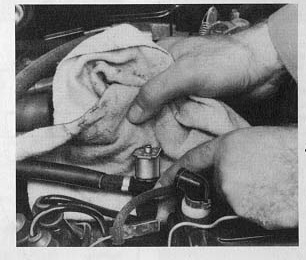

Engine floods due to leaky cold-start valve.
- Detach cold start valve from intake air distributor but leave it
connected to the ring main.
- Pull connector off cold start valve.
- Pull wire off terminal 1 on coil.
- Operate starter.

Valve does not leak.
Valve leaks.